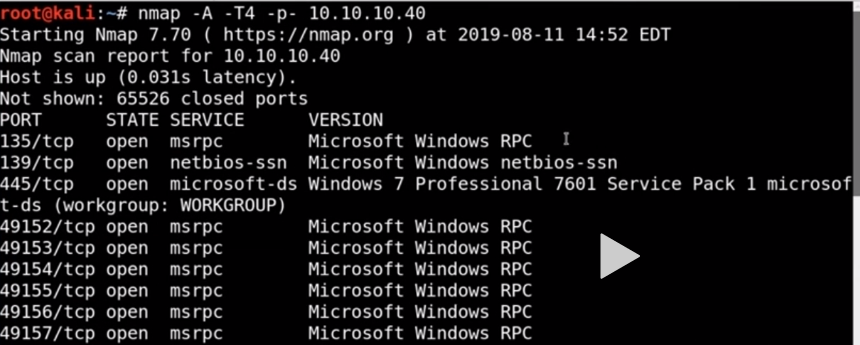

ms17_010 is the exploit we ll be talking about
wannacry used it as a part of payload

whenever u see something like windows 7 professional 7601 sevice pack1 use eternal blue
and i found out by using msfconsole annd getting smb_version there got the following image :


at times the name of box gives hint as in to what tool to be used
(however follwoign method could tip the machine over)

hence he usecd this
and finally got this

and hence used this after confirming


and finally we are done (bt this does not always give successfull results)
thus options we see now

thus see the payload options it is unstaged payload coz its generic/shell_reverse_tcp
if it was staged payload it would have been generic/stage1/stage2/stage3
so if u know an exploit is there for sure then try changing unstaged to staged
hence improving upon we get :


even this didint work for us so google abt autoblue:
bt later on trying again above did work

getting this meterpreter means that we have got access of the shell
wrote :route print to see what does it talkt o

wrote commands like :netstat -ano


tried following ot get credentitals bt it failed:

could use lsa_dump_sam
also lsa_dump_secrets
one more tool is incognito:


metasplot also has post exploitation commands
installing the tool

ran the checker file (target not patched meaning its vulnerable)

this above can be useful to prove to the company when u cant hack in system bt all u need is a user to hackk it basically

lhost for reverse connnection is basically us
type ifconfig:

inet value is what we need actually

we know its x64 and not x86 hence typed aise hi 4446 for x86 wala
and typpe 0 as for simplicity e need meterpreter shell

its running msfvenom which is payload generator

thus it did generate payloads for us

this starts metasploit which has an exlploit handler
we get as follows

we use an exploit handler to set up a listener we are listeneing in the background for any conncetions thar come on 4445 or 4446
it needs to know the payload we are using :

this payload was generated by msfvenom
hence it was aksing ques like 0 for staged and 1 for unstaged
now did this :


this was happending in other tab

know abt staged and unstaged payloads (try changing payload type if one doesnt work)